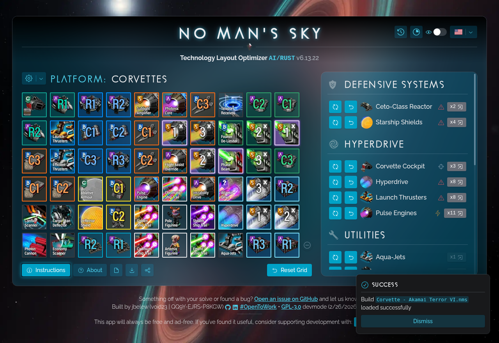

NMS Optimizer: The Best Free Calculator for No Man's Sky Tech Layouts

Welcome to the NMS Optimizer, the best free calculator, planner,
and optimizer for creating optimal No Man's
Sky technology layouts. Whether you're looking to maximize your starship, corvette,
multitool, exocraft, or exosuit performance, our tool is here to help. We use advanced optimization
algorithms to
calculate the best placement of
your technology modules, maximizing adjacency bonuses and the effectiveness
of your supercharged slots.
What is an Adjacency Bonus?
In No Man's Sky, an adjacency bonus is a crucial performance boost mechanic for
your technology modules. When you place compatible technology modules next to
each other in your inventory, they receive a synergy bonus and enhanced performance.
The NMS Optimizer calculator is the best free tool to find the optimal arrangement
for maximum adjacency bonuses.
What Are Supercharged Slots?
Supercharged slots are a special type of inventory slot in No Man's Sky that
provides a massive boost to any technology module placed within them. These
slots are rare and valuable, and using them effectively is key to creating the
best builds. The NMS Optimizer is designed to help you make the most of your
supercharged slots, ensuring that you get the best possible performance out of
your gear.
How the NMS Optimizer Works
Our free No Man's Sky optimizer and calculator uses advanced optimization algorithms
including deterministic patterns and simulated annealing to find the best possible technology layout
for your specific needs. Whether you're building a starship, corvette, upgrading your
multitool, or optimizing your exosuit or exocraft, our tool will calculate
the optimal layout that maximizes your adjacency bonuses and overall performance.
Supported Platforms
- Starship Layouts
- Corvette Layouts
- Multitool Builds
- Exosuit Layouts
- Exocraft Layouts
- Freighter Layouts
Why Use the NMS Optimizer?
Stop the guesswork and unlock the true potential of your gear. Our NMS Optimizer
is the best calculator, planner, and builder for
creating the perfect No Man's Sky builds. Whether you're a
new player or a seasoned veteran, our tool will help you create the best
starship, freighter, corvette, multitool, exocraft, and exosuit layouts and builds.